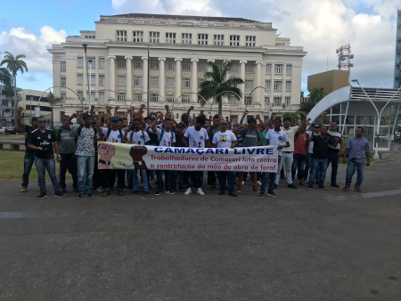
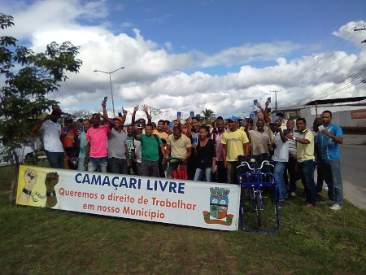
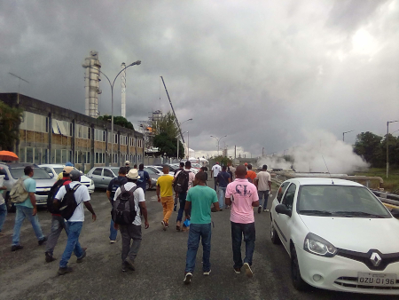
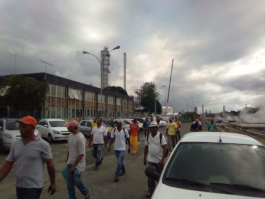

Principais dúvidas
Quando surgiu a associação?
A associação de trabalhadores de camaçari, cujo nome ficticio "Camaçari-livre", surgiu dia 23 de setembro de 2014, na defesa e no amparo dos trabalhadores desempregados de camaçari e região metropolitana. Com o intuito de trazer oportunidade, qualificação e profissionalização pro povo de camaçari e região metropolitana, buscando o respeito das comunidades junto a industria petroquímica de camaçari e região metropolitana.
O que é a associação Camaçari-livre?
É um conjunto de homens e mulheres trabalhadores empregados e desempregados, que vem buscando espaço e respeito das industrias da cidade de camaçari e região, buscamos a valorização da mão de obra local.
Quem pode fazer parte da associação?
Quem pode fazer parte da associação? Trabalhadores empregados e desempregados, que estão buscando seus direitos. A associação busca membros com vontade de se capacitar profissionalmente, se qualificar e seguir normas, condutas e hierarquias das empresas, assim sendo contratado por elas.
Como teve a ideia de criar o Camaçari-livre?
O pólo de Camaçari foi o primeiro complexo petroquímico planejado do país, e iniciou suas operações em 1978 trazendo a mão de obra da construção civil e montagem. E dai surgiu a ideia de criar uma associação de trabalhadores e profissionais de Camaçari e região, capacitados para assumir qualquer cargo em qualquer empresa e qualquer serviço, sendo concluido com rapidex, qualidade e segurança.